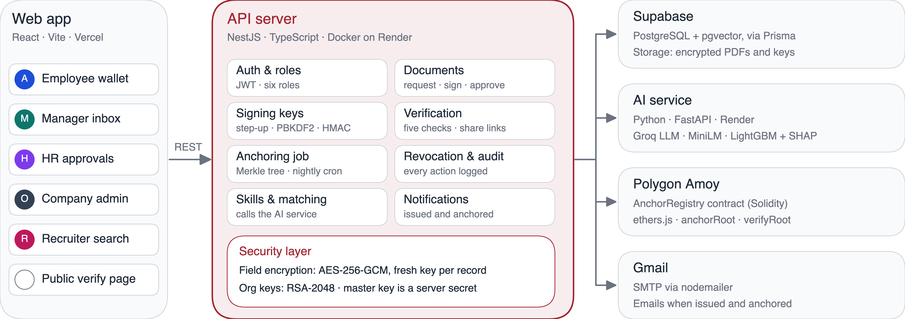
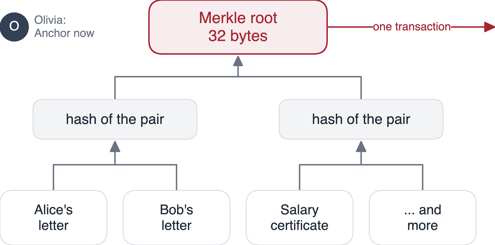

CareerVault: Team Study Guide
Final external evaluation. Everything you need to present the deck, narrate the demo and answer questions about the code, in one day.
How to read this. Every highlighted term is a buzzword, with its meaning right after it in grey italics. Use those words on stage. Say it on stage boxes give you a ready sentence. Know, don't volunteer boxes hold the honest details: don't bring them up yourself, but answer them calmly if asked. The tag before each topic shows who presents it (TM1…TM4); All means everyone must know it for the Q&A.
1TM1The problem and our answer
Today an employer checks a letter by calling HR, emailing, or paying an agency: days to weeks, repeated by every new employer. Earlier blockchain projects (MIT's Blockcerts diplomas, EduCTX credits, Marella & Vijayan on Hyperledger) mostly store a hash and focus on education.
What we add: separation of duties (two named people must approve every document), personal data kept off-chain, and a working, deployed system.
2TM1The story is the document lifecycle
The deck and the video follow one letter: Alice's experience letter from TechCorp. The cast: Alice (employee), Marcus (manager), Hannah (HR), Olivia (company admin), Riya (recruiter), Bob (the employee whose letter is revoked).
| Step | Who | Status stored | What happens behind the screen |
|---|---|---|---|
| Request | Alice | REQUESTED | Alice only asks; the company writes the content. She can opt in to AI skill extraction. |
| Sign | Marcus | DRAFT → PENDING_HR | Marcus fills in the facts, passes a step-up check (re-enters personal details), and his key seals and signs the letter. |
| Co-sign & issue | Hannah | ISSUED | A different person must approve. Her side re-checks the fingerprint, then she seals and signs too. The PDF is generated and stored encrypted; Alice gets an email. |
| Share & verify | Anyone | ISSUED | Alice creates a free share link; anyone opens it with no account. The server runs five checks. |
| Anchor | Olivia | ANCHORED | Nightly (or "Anchor now"), all new fingerprints become one Merkle root (one 32-byte summary of the whole batch) sent to our smart contract on Polygon. |
| Revoke | Hannah | REVOKED | Our database decides immediately; a DocumentRevoked event follows on-chain as a public record. |
Other states: EXPIRED after 90 days (letters of recommendation never expire). Rejecting a letter sends it back to DRAFT; there is no "rejected" state.
3TM2 · TM3The demo video and who says what
One continuous take on the live production site, 9 min 49 s, recorded 16 Nov 2026 by a scripted browser. It shows real evidence: a real Gmail email, encrypted Supabase rows, and real PolygonScan transactions. Play it from the local file, not over Wi-Fi.
| Speaker | Slides / video | Your key lines |
|---|---|---|
| Team Member 1 | Slides 1–5 (~3 min) | Alice's problem and the stats; what exists; our four goals; meet TechCorp; the lifecycle statuses. End: "Over to Team Member 2." |
| Team Member 2 | Slide 6 + video 00:00–05:42 | Request; Marcus's step-up and refusal; Hannah co-signs; the Supabase cut-in shows ciphertext (talk over the 3 s glitch at ~03:36); five green checks. At 05:42: "Over to Team Member 3." |
| Team Member 3 | Video 05:42–end + slides 7–9 | Anchor now; verifyRoot answers true; Bob revoked; admin and audit; Riya matching. Then the architecture, Marcus's keys and Hannah's fingerprint. End: "Over to Team Member 4." |
| Team Member 4 | Slides 10–16 (~5 min) | Encryption; five checks; Merkle and revocation; AI; results per person; future scope; "a career document that proves itself". Then Q&A. |
The full minute-by-minute talk track is in each slide's speaker notes (slide 6 for the video).
4TM3Architecture: what runs where

| Part | Technology | What it does, and why we chose it |
|---|---|---|
| Web app | React 19, Vite, Tailwind, Redux Toolkit (RTK Query); hosted on Vercel | One SPA (single-page app) with a portal per role plus the public verify page. Vercel serves it from a global CDN (copies close to users). |
| API server | NestJS 11 (TypeScript), Prisma 7; Docker container on Render | All business rules. Modular: auth, documents, signing keys, verification, share links, anchoring, audit, matching, notifications. TypeScript end to end, shared with the frontend. |
| Database | PostgreSQL + pgvector on Supabase, via Prisma ORM (code talks to the DB as typed objects) | Users, organisations, documents, audit log, AI embeddings. pgvector stores AI vectors in the same database, so no separate vector DB. |
| File storage | Supabase Storage | Issued PDFs and each organisation's private key file, both encrypted before upload. |
| AI service | Python, FastAPI, on Render | Skill extraction (Groq LLM), embeddings (MiniLM), ranking (LightGBM + SHAP). Separate so heavy ML code never slows the API. |
| Blockchain | Solidity contract AnchorRegistry (Hardhat) on Polygon Amoy, called with ethers.js v6 | Stores Merkle roots and revocation flags; anyone can read it on PolygonScan. |
| Gmail SMTP via nodemailer | "Your document is ready" and "anchored on-chain" emails. | |
| Scheduled jobs | Cron (timed jobs) inside the API container | Midnight (IST) Merkle anchoring, share-link expiry, data retention clean-up. |
Design pattern to name-drop: the adapter pattern — every outside service (storage, email, keys, blockchain, DNS) sits behind an interface with a local version and a real version, chosen by configuration. That is why the same code runs a local simulated chain on a laptop and real Polygon in production.
5TM3 · TM4How trust is built (slides 8–10)
First, the three words people mix up. Learn this table; it answers half the crypto questions.
| Word | What it does | Can you undo it? | Where we use it |
|---|---|---|---|
| Hashing | Turns data into a fixed fingerprint | No: one-way | SHA-256 fingerprint of the letter |
| Encryption | Locks data so only a key holder can read it | Yes, with the key | AES-256-GCM on stored fields and PDFs |
| Signing | Proves who approved exact data | Anyone with the public key can check it | RSA-2048 signatures by Marcus and Hannah's company |
The pipeline, step by step
- Exact bytes. The letter is written in our own byte format ("CVDOC": every field as tag, length, value), so the same letter always gives identical bytes. The document ID, organisation and holder are inside the bytes, so a letter can't be moved to someone else. (We replaced the JSON library, JCS, with our own format.)
- Salt. 32 random bytes added to every letter. A salt stops anyone guessing a salary from its fingerprint, and makes identical letters hash differently.
- Fingerprint. SHA-256 turns the bytes into a 32-byte code (64 hex characters). Change one character and the whole code changes: the avalanche effect. Slide 9: "3 years" →
a3b4e6b2…, "8 years" →ec0a4d88…. - Personal key. At enrolment Marcus gives date of birth, an ID and three answers. PBKDF2 (a key-stretching function) runs them 600,000 times (the OWASP recommendation) into his 256-bit key. The answers are never stored; the key is stored only encrypted.
- Step-up. Before every signature he re-enters his details; the server re-derives the key and compares it in constant time (so timing reveals nothing). A wrong answer is refused; 5 failures in 15 minutes lock signing.
- Personal seal. HMAC-SHA256 is a fingerprint that also needs a secret key, so only Marcus's key can make his seal over the letter's bytes.
- Company signature. TechCorp's RSA-2048 key (public/private key pair) signs a statement of fingerprint + seal + role + member. A digital signature proves who approved exactly this data.
- Second person. HR must be a different user (four-eyes principle, also called maker–checker). Hannah's side re-checks the fingerprint, then she does her own step-up, seal and signature.
- TM4 Encrypted storage. AES-256-GCM encryption that also detects tampering (authenticated encryption) in an envelope encryption scheme: a fresh data key per record, and those keys locked by a key derived from one master key. The database only holds text like
cvenc:v1:…. PDFs are encrypted the same way. In production, strict mode refuses to read any plaintext.
6TM4Verification (slide 11)
The employer sends only a document ID or a share link. No account. Our server decrypts the record, rebuilds the exact bytes and runs five checks:
| # | Check (the exact label on screen) | What it proves |
|---|---|---|
| 1 | Issued document on record | TechCorp really issued it |
| 2 | Content unchanged since signing | The rebuilt fingerprint matches the signed one |
| 3 | Manager signature | Marcus's seal and the company signature are valid |
| 4 | HR co-signature | Hannah's seal and the company signature are valid |
| 5 | Not revoked or expired | Still active |
- Minimal disclosure: the answer contains the verdict, issuer and signers, and never a key, salt, hash, seal or signature.
- Share links are free; Alice can set an expiry and a view limit, or switch a link off at any time.
- The blockchain shows as a badge ("pending" or "timestamped on-chain"). It never decides the verdict.
7TM4Blockchain (slide 12)

- Merkle tree: pair up fingerprints and hash each pair, repeating until one value, the Merkle root, is left. Only the 32-byte root goes on-chain, so there is no personal data on the blockchain and one transaction covers any number of letters.
- Merkle proof: the few sibling hashes that link one letter to the root. For 100,000 letters it is just 17 hashes (544 bytes) and checks in about 0.045 ms.
- Smart contract: a program that lives on the blockchain. Ours, AnchorRegistry (Solidity), has
anchorRoot,verifyRoot,revokeDocumentandisRevoked. Only our authorised wallet can write; anyone can read. - Polygon PoS: an Ethereum-compatible blockchain with low fees. We use its testnet Amoy (chain ID 80002): the real network software, with free test tokens. Each anchor costs about 0.0035 test POL in gas (the transaction fee).
- Immutable and tamper-evident: once written, nobody (including us) can silently change or back-date a root. This is timestamping, the idea from Haber & Stornetta (1991).
- Before anchoring, an integrity gate re-decrypts and re-hashes every candidate; anything that doesn't match is skipped.
- Revocation: the database is authoritative and shows Revoked at once; a
DocumentRevokedevent follows on-chain as a public trail.
8TM4AI matching (slide 13)
- Consent. Off by default; Alice opts in (privacy by design). She can switch discovery off at any time.
- Read skills. An LLM (large language model), Llama 3.3 70B through Groq, lists the skills in her verified letters. A keyword fallback runs if Groq is unavailable.
- Into numbers. MiniLM (all-MiniLM-L6-v2) turns text into an embedding: 384 numbers where similar meanings sit close together.
- Search. pgvector finds profiles by cosine similarity (how closely two vectors point the same way).
- Rank and explain. Six features: embedding similarity, skill overlap, seniority fit, industry overlap, years of experience, recency. LightGBM (gradient-boosted decision trees) scores them, and SHAP splits each score into how much every feature added. That is explainable AI (XAI).
9AllOther security you can mention
Access
- RBAC (role-based access control): ORG_ADMIN, MANAGER, HR, HOLDER, RECRUITER, plus the public verifier.
- JWT (signed login token) signed RS256; refresh token in an HttpOnly cookie (scripts can't read it), rotated on use.
- Passwords hashed with bcrypt; external managers use single-use 15-minute magic links.
- Multi-tenancy: every query is scoped to the user's organisation.
Attacks and evidence
- Parameterised queries: SQL injection text is stored as plain text, never run.
- A payload guard refuses prototype pollution (
__proto__tricks), HTML markup (XSS) and malformed IDs. - Rate limiting on login; errors never leak table names.
- Audit log: every sign, issue, verify and revoke is recorded.
10AllCode map (one monorepo, many packages in one Git repository)
| Folder | What lives there |
|---|---|
client/ | React app, one folder per feature: document, verification, share-link, employee-key, anchoring, recruiter, audit… |
server/ | NestJS API. src/modules/ = features; src/services/ = adapters (blockchain, storage, email, key-management, ai); prisma/schema.prisma = the database model. |
ai-service/ | FastAPI: extraction.py (Groq), embeddings.py (MiniLM), ranking.py (LightGBM + SHAP). |
contracts/ | AnchorRegistry.sol, Hardhat tests, the Amoy deployment record. |
e2e/ | Playwright browser tests of the whole chain: request → sign → approve → verify. |
demo-recording/ | The script that drove a real browser on production and recorded the 9:49 video. |
Eight files worth naming if asked "where is that in the code?"
| File | What it does |
|---|---|
server/src/common/crypto/document-bytes.ts | Our byte format for a letter |
server/src/modules/employee-key/ | PBKDF2 personal keys and the step-up lockout |
server/src/modules/document/document-seal.ts | HMAC seal + RSA signature for manager and HR |
server/src/prisma/encryption/field-encryption.extension.ts | Encrypts fields automatically on every database write |
server/src/modules/verification/verification-checks.ts | The five checks |
server/src/modules/merkle/merkle.service.ts | Builds the batch, runs the integrity gate, anchors the root (merkle.cron.ts schedules it nightly) |
server/src/services/blockchain/polygon-anchor.service.ts | Sends the root to Polygon with ethers.js |
contracts/contracts/AnchorRegistry.sol | The smart contract |
Testing: 399 server unit tests (Jest) and 18 smart-contract tests (Hardhat) pass. There are also API end-to-end tests, including attack tests (SQL injection, prototype pollution, script injection), Playwright browser tests, and pytest for the AI service.
Deployment: pushing to main deploys the client to Vercel and the API and AI service to Render; the database and storage are on Supabase.
11AllQ&A drill: likely questions, short answers
- What is new compared with existing work?
- Two named people approve each employment document with personal keys, data stays private and erasable, and it is a deployed system, not a prototype.
- How is this different from DigiLocker?
- DigiLocker holds documents from government and institutional issuers. We cover letters from private employers, with two-person approval, public timestamps, and verification for anyone without an account. Linking with DigiLocker is in our future scope.
- Why use a blockchain at all if the server decides?
- For an independent, public, tamper-evident timestamp: proof that the record existed then and was never back-dated or quietly changed, even by us.
- What if Polygon is down?
- Verification still works; only the badge says "unreachable". The chain is a receipt, not the judge.
- Why Polygon and not Ethereum? Why a testnet?
- Same Solidity and tools, much lower fees, fast blocks. Amoy uses free test tokens; moving to mainnet is a configuration change and a contract deployment.
- Why not store the documents on-chain?
- A chain can't delete, and personal data must be erasable (GDPR, DPDP). Only a 32-byte root goes on-chain. Erasing an account deletes the content, PDF and salt, so the hash on-chain links to nothing: crypto-shredding.
- Hashing vs encryption?
- A hash is a one-way fingerprint; encryption is a two-way lock with a key. We hash to detect changes and encrypt to keep data private.
- Why both HMAC and RSA?
- HMAC is the person's own seal (only their key); RSA is the company's signature. Together, each signature is one named person's act on behalf of the company.
- Why 600,000 PBKDF2 rounds?
- It is the OWASP recommendation for PBKDF2-SHA256: slow enough to make guessing expensive.
- What if someone edits the database directly?
- The fingerprint and signatures stop matching, so check 2 fails, and the integrity gate refuses to anchor it.
- What if the database is stolen?
- It only holds
cvenc:v1ciphertext; the master key is not in the database. - What if the master key is lost or leaked?
- It must be backed up like any root secret; with the wrong key the server returns an error rather than a wrong verdict. Moving it into a cloud KMS is the next step.
- Can the manager and HR collude?
- Two insiders together could, as on paper, but both are named, audited and revocable. We prevent any single person from issuing.
- Same person as manager and HR?
- The server refuses: the approver must be a different user.
- How does revocation work if the chain is immutable?
- The database status is authoritative; the chain adds a revocation event, so the history shows both issue and revoke.
- How does it scale?
- One transaction per batch whatever its size; proofs grow only logarithmically (17 hashes for 100,000 letters).
- How is the AI explainable?
- SHAP shows each feature's contribution to the score, so every match has a plain reason.
- Is the AI trained?
- It is a transparent baseline over six features; training on recruiter feedback is the next step.
- How did you test it?
- 399 server and 18 contract unit tests, API attack tests, and Playwright browser tests of the whole flow.
- Is the demo real?
- Yes: recorded on the live production site, with real Polygon transactions and a real email. We can open the site now.
12AllNumbers to remember
| Number | Meaning | Number | Meaning |
|---|---|---|---|
| 600,000 | PBKDF2 rounds | 5 / 15 min | wrong tries before signing locks |
| 32 bytes | salt, SHA-256 output, Merkle root | 64 | hex characters in a fingerprint |
| RSA-2048 | company signing key | AES-256-GCM | storage encryption |
| 5 | verification checks | 7 | document statuses |
| 5 + 1 | roles + the public verifier | 90 days | letter validity (recommendations: none) |
| 544 B / 0.045 ms | Merkle proof for 100,000 letters | ≈ 0.0035 POL | gas per anchor batch (testnet) |
| 80002 | Polygon Amoy chain ID | 0x483f…Cb12a | our AnchorRegistry contract |
| Midnight IST | nightly anchoring (plus "Anchor now") | 384 | numbers in a MiniLM embedding |
| 399 + 18 | server + contract unit tests passing | 9:49 | length of the demo video |
13AllGlossary
AAD extra context bound into encryption (e.g. the field name), so ciphertext can't be reused elsewhere.
AES-256-GCM fast symmetric encryption with a built-in tamper check.
Anchoring writing a fingerprint (our Merkle root) to a blockchain as a timestamp.
Audit log a record of who did what, and when.
bcrypt slow password hashing, so stolen hashes are hard to crack.
Cosine similarity how alike two embeddings are (1 = same direction).
Cron job code that runs on a schedule.
Crypto-shredding erasing data by destroying what makes it readable or linkable (our salt).
Custodial key a private key the service holds for its users.
Digital signature proof, checkable with a public key, that a key holder approved exact data.
Docker packages an app with everything it needs, so it runs the same anywhere.
Embedding a list of numbers that captures meaning.
Envelope encryption data keys encrypt the data; a master key encrypts the data keys.
ethers.js the JavaScript library our server uses to talk to Polygon.
Four-eyes principle two people must approve; one alone can't.
Gas the fee paid for a blockchain transaction.
HKDF derives purpose-specific keys from one master key.
HMAC a keyed fingerprint: only the key holder can produce it.
Immutable can't be changed once written.
JWT a signed token that proves who is logged in.
LightGBM a fast gradient-boosted decision-tree model.
LLM a large language model (we use Llama 3.3 through Groq).
Merkle proof the few hashes that link one item to the root.
Merkle root one hash that summarises a whole batch.
Minimal disclosure reveal only what the verifier needs.
Monorepo all packages in one repository.
Multi-tenancy many companies share the system, each sealed off from the others.
ORM code talks to the database as typed objects (Prisma).
PBKDF2 stretches a secret into a key, slowly on purpose.
pgvector PostgreSQL extension for storing and searching embeddings.
Polygon PoS a low-fee, Ethereum-compatible public blockchain.
RBAC permissions given by role.
REST API the standard way the browser talks to the server over HTTP.
RSA-2048 public-key cryptography used for signatures.
Salt random bytes added before hashing.
SHA-256 the hash function: any data → a 32-byte fingerprint.
SHAP splits a model's score into each feature's contribution.
Smart contract a program stored and run on a blockchain.
Solidity the language Ethereum-style smart contracts are written in.
Step-up authentication asking again for proof right before a sensitive action.
Tamper-evident any change is detectable.
Testnet a real blockchain network that runs on free test tokens.
Web 2.5 a normal web app that uses a blockchain only where it adds trust.
XAI explainable AI: models whose decisions can be explained.